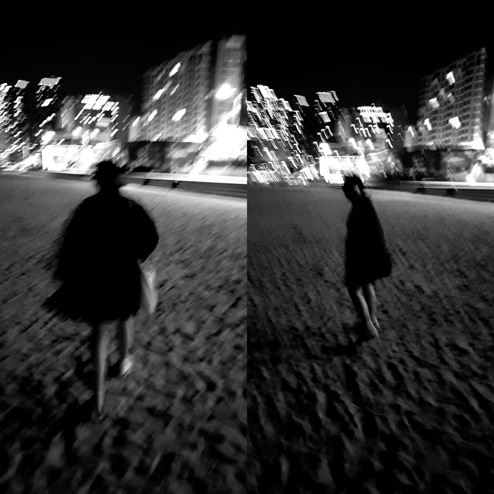

- 심장이
- 악을
- 그 얼굴

Terrified
심장이 땅으로 곤두박질쳤다.
다시 떨어진 심장을 제자리에 위치 시키는데 애먹었다. 하루에도 몇 번이고 발작처럼 심장이 쿵 내려앉았다가 다시 돌아오기 일쑤였다. 일상은 확실히 망가졌다.
좋아하던 일 중 하나인 고양이를 쓰다듬는 과정에서도 눈물이 주룩주룩 흘렀다. 억울했다. 그리고 화가 났다.
나는 벗어나려 발버둥 치는 것 같은데 너는 단 한 번도 발버둥 친 적이 없다. 붙잡혀있던 적이 없었으니까.
그런 너는 벗어나려 애를 쓰는 날 비웃듯 내 앞에 서있다.
악을 질렀다.
그와 동시에 고통에 숨을 헐떡였다. 너는 여전히 무표정인 채로 나를 바라본다.
움직임이 커질수록 나는 벗어나지 못한 채 더 깊게 빠졌다. 귀를 째는 비명소리를 연이어 낼 때마다 목은 그만하라며 애원했다.
결국 제풀에 지쳐 쓰러진다. 그걸 며칠 밤낮으로 반복하다 보니 이제는 그냥 묶여있는 채로 숨만 내쉰다.
여전히 넌 미동도 않은 채 내 앞에서 날 바라본다. 날 절벽에서 밀어놓고는 뻔뻔하게 얼굴을 들고 있다.
그 얼굴을 향해 독설을 뱉었다.
네가 망했으면 좋겠다고. 아주아주 견디기 힘든 고통에 몸부림쳤으면 좋겠다고. 내가 싫어졌다고 말했던 너는, 그 누구에게도 사랑받을 수 없을거라고.
그리고 절규에 가까운 흐느낌을 내뱉는다.
날 버린 네가 후회했으면 한다고.